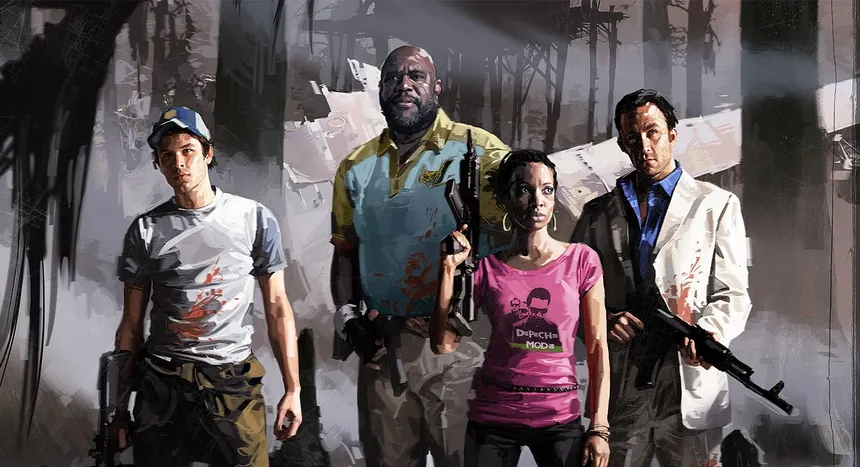
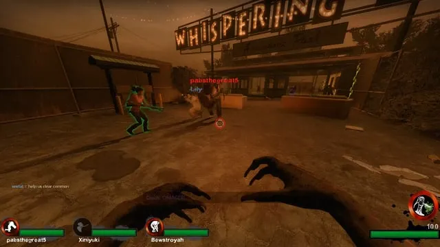
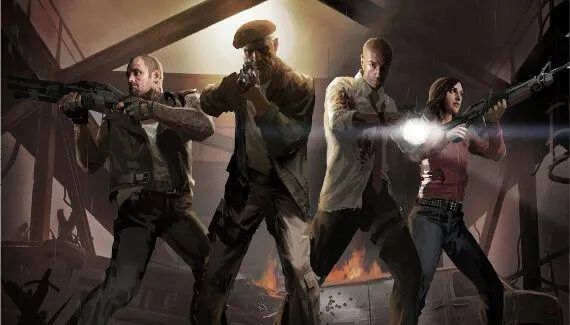

Un classique du zombie coop. Nervosité, survie, teamwork et gros chaos : Left 4 Dead 2 reste l’un de mes jeux cultes.
← Retour à l'accueil
Un jeu intense, fun et parfait pour jouer en coop contre des hordes de zombies.

J'ai toujours aimer incarner les infectés spéciaux

L4D2, combien de temps pourras-tu survivre face à la HORDE